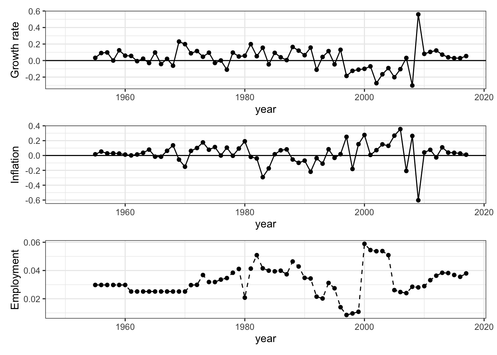
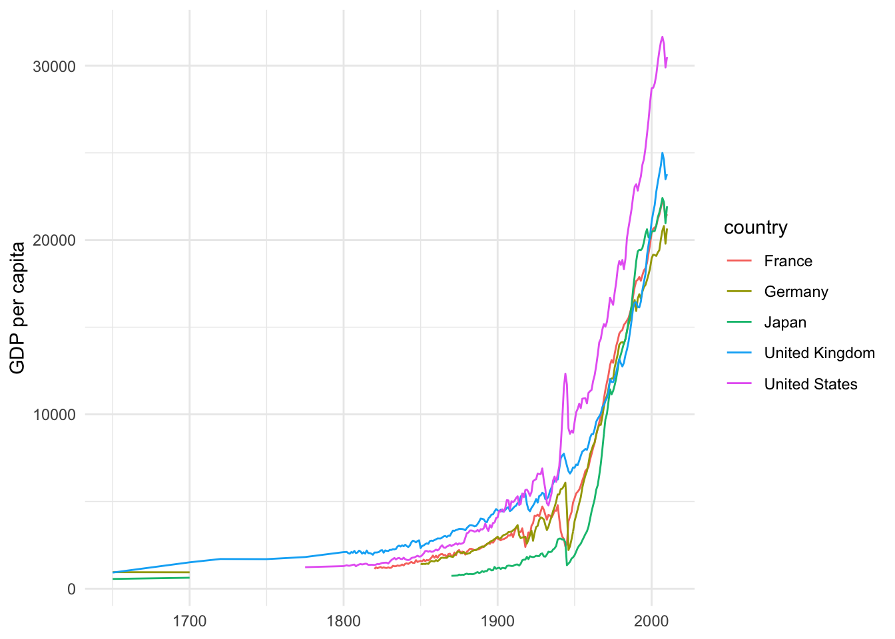
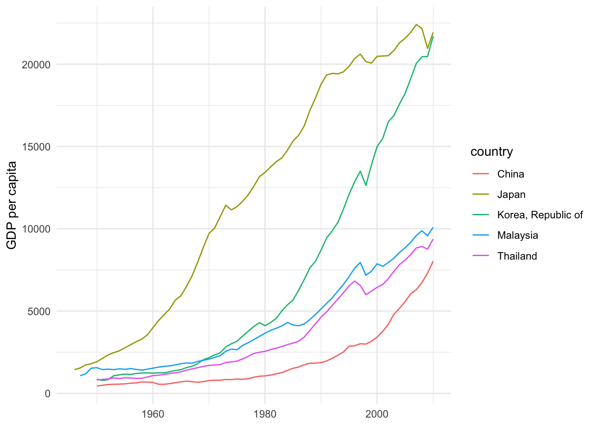

2.1 Groningen Growth and Development Centre
1992年にフローニンゲン大学の経済学部内に設立されたGroningen Growth and Development Centre（GGDC）は、.現在では、グローバリゼーション、テクノロジー、制度的変化の相互作用と、それが長期的な経済成長、構造変化、生産性、不平等に与える影響を研究する研究センターとなっています. 同センターは次のようなデータベースを公開しています.
| データベース名 | 提供されるデータ | Rパッケージ |
|---|---|---|
| Penn World Table | 所得,産出高，投入および生産性 | pwt9 |
| 10-Sector Database | セクター別産出、投入、生産性データ | |
| World Input-Output Database | グローバルバリューチェーン | |
| The Maddison Project Database | 歴史的発展 | maddison |
このうちRパッケージが開発されている２つのデータベース-Penn World TableとThe Maddison Project Database-を紹介しましょう.
2.1.1 Penn World Table ― pwt9
Penn World Tableは経済研究においてもっとも頻繁に利用されているデータベースの１つと言えるでしょう.これは所得，産出高，投入および生産性に関する情報を提供するデータベースです．これは1950年から2017年の182ヵ国をカバーしています（基準年は2011年）6. pwt9はデータパッケージです．country（国名），isocode（3桁の国コード）, year（年）, currency（各国の通貨単位）の変数の他に，rgdpe（支出面の実質GDP），rgdpo（生産面の実質GDP）,hc(1人あたり人的資本指数)などを含む48の時系列データが提供されています．それではinstall.packages()を使ってRにインストールしましょう．
# pwt9のインストール
install.packages("pwt9")Rパッケージptw9はデータだけのパッケージですので，data()関数で読み込みます．スクリプトに次のように入力し，[Run]をクリックしてください．
# pwt9.1の読み込み
data("pwt9.1")データ自体は更新され，現在，バージョン9.1となっています．これを実行することにより，12,376の観察値×52の変数のデータフレームが取得されます． データセットの最終数行を表示させるtail()関数を使ってこのデータセットの最後の部分を見てみましょう．ちなみにtail()関数と反対の結果を出力するのがhead()関数です。head()関数はデータフレームの冒頭部分を表示させます.
tail(pwt9.1)
Penn Wordl Table, pwt9.1
ここでpwt9.1データを使ってジンバブエ経済を観察してみましょう．そのためにジンバブエ経済だけ取り出し，zweというオブジェクトに容れます．
# ジンバブエデータを取り出す
zwe <- pwt9.1 %>%
filter(isocode == "ZWE")ここではfilter()関数を利用し、isocodeが“ZWE”に一致する行だけを抽出しています. つまりジンバブエの行を取り出しています。
filter(データフレーム名, 抽出条件)filter() 関数の使い方はこのようになりますが、ここではパイプ(%)をつかって“pwt9.1”をfilter()関数に渡しています。このためデータフレーム名が省略されています。
ジンバブエのマクロ状態―GDP，雇用，価格の成長率・上昇率―をグラフにし観察してみましょう．それぞれの変数名はrgdpe（実質GDP）,emp（就業者数）,pl_c（家計消費の価格水準）です． グラフ作成までの手順は次のようになります．
- 手順1.３つの変数の時系列的推移を描くために，zweからこの３つの変数とyear変数を取り出します．
- 手順2. ３つの変数を成長率に変換します．
- 手順3. 最後に，３つの変数を表示するグラフを作成します．
手順1：特定の変数(列)の取出し – select()関数
select()関数を使ってyearと３つの変数―rgdpe（実質GDP）,emp（就業者数）,pl_c（家計消費の価格水準）―を抽出します．
zwe <- zwe %>%
select(year, rgdpe, emp, pl_c) 手順2：成長率の計算
成長率の計算にあたっては対数差分を利用します．変数を対数に変換するにはlog()を使います．たとえば，log(rgdpe)と入力し，実行すれば（[Run]をクリックすると），Rはrgdpeの対数を返します．さらに，１期前の対数の値との差をとる必要があります.１期前に変換するためにlag()関数 を利用します7．lag(rgdpe)で１期前の実質GDPの値を指定できます．以上を利用すると，対数差分の計算式は以下のように表現されます．
log(rgdpe) - log(lag(rgdpe)) # 成長率（対数差分）の計算この計算式を利用し，mutate()関数を使って成長率変数を作成します．mutate()は既存の変数（列）に関数を適用し，新たな変数を作成する関数です．新たな変数の名前は，この例では既存の変数の冒頭にg_をつけたものにしています．
zwe <- zwe %>%
mutate(
g_rgdpe = log(rgdpe) -log(lag(rgdpe)),
g_emp = log(emp) -log(lag(emp)),
g_pl_c = log(pl_c) -log(lag(pl_c))
)以上をまとめてスクリプトに書くとつぎのようになります．
zwe <- pwt9.1 %>%
filter(isocode == "ZWE") %>%
select(year, rgdpe, emp, pl_c) %>%
mutate(
g_rgdpe = log(rgdpe) -log(lag(rgdpe)),
g_emp = log(emp) -log(lag(emp)),
g_pl_c = log(pl_c) -log(lag(pl_c))
)これを実行すると，３つの変数とその成長率変数をもつジンバブエデータが作成されます．View()関数で確認してみてください．
View(zwe)手順3：グラフの作成
グラフの作成にはggplot2パッケージを利用します．
zwe_growth <-ggplot(data = zwe) + # GDP成長率のグラフ作成
geom_point(mapping = aes(x =year, y = g_rgdpe))+
geom_line(mapping = aes(x = year,y = g_rgdpe))+
geom_abline(intercept = 0,slope = 0)+
labs(x="year", y= "Growth rate")+
theme_bw()zwe_inflation <- ggplot(data = zwe) + # インフレ（価格上昇率）のグラフ作成
geom_point(mapping = aes(x = year, y = g_pl_c))+
geom_line(mapping = aes(x = year,y = g_pl_c))+
geom_abline(intercept = 0,slope = 0)+
labs(x="year",y="Inflation")+
theme_bw()zwe_emp <- ggplot(data = zwe) + # 雇用成長率のグラフ作成
geom_point(mapping = aes(x = year, y = g_emp))+
geom_line(mapping = aes(x = year,y = g_emp),lty="dashed")+
labs(x="year",y="Employment")+
geom_abline(intercept = 0,slope = 0) + theme_bw()グラフの作成にあたってはggplot2を利用していますが，このパッケージはtidyverseをインストールすることによってインストールされます．すべてのグラフが同じ構成要素―データセット，座標システムおよびデータ点を表す描画の印― で作成されます．使い方は構成要素を“＋”で重ねることが基本です．
ggplot(data = データフレーム名)+
geom_point(mapping = aes(x = x軸変数,y = y軸変数))+ # データを点で表現します.
geom_line(papping = aes(x = x軸変数,y = y軸変数))+ # データを線で結びつけます.この例ではlabs()を使ってx軸とy軸のタイトルを追加しています．labs()の書式は以下のとおりです．
labs(x = "x軸タイトル", y = "y軸タイトル")さらに，geom_abline()を使って成長率ゼロの水準に直線を追加しています．geom_abline()の使用法は次のとおりです.
geom_abline(intercept = "直線の切片の位置",slope ="直線の傾き")最後に，テーマを指定するtheme_でtheme_bw()を選択し，白黒のテーマを選んでいます．それぞれ３つのグラフを描きますが，ここではRパッケージpachworkを使ってグラフのレイアウトを操作します．
install.packages("patchwork") library(patchwork)patchworkパッケージは操作対象の図を足し算記号（＋）や割り算記号（/）等を使って配置します。詳細についてpatchworkパッケージサイトを参照してください．library(patchwork)で呼び出したのちに，次のように入力することで3つのグラフを縦に配置します．
zwe_growth/zwe_inflation/zwe_emp
2.1.2 The Maddison Project Database ― maddison
Maddisonプロジェクトは、世界のあらゆる地域の長期的な経済パフォーマンスを初めて定量化した故Angus Maddisonの業績を引き継ぐものです.Maddisonは世界のすべての地域の長期的な経済パフォーマンスを、一貫した枠組みで定量化した著名な経済学者です.
Maddison Project Databaseはローマ時代から現在までの世界の国々の所得の推定値を提供しています.このデータベースのおかげで成長のダイナミクスや長期的な経済成長の要因を調べることができます.
2.1.2.0.1 maddisonのインストール
次のように入力し、maddisonをインストールし、library()でロードします.
# maddisonのインストール
install.packages("maddison")
# maddisonの呼び出し
library(maddison)このパッケージは1人あたりGDPとともにマディソンプロジェクトのデータを含むデータパッケージです.str()でデータフレームの内容をみると,
str(maddison)## tibble [45,318 × 9] (S3: tbl_df/tbl/data.frame)
## $ year : Date[1:45318], format: "0001-01-01" "0730-01-01" ...
## $ country_original: chr [1:45318] "Austria" "Austria" "Austria" "Austria" ...
## $ gdp_pc : num [1:45318] NA NA NA NA NA NA NA NA NA NA ...
## $ country : chr [1:45318] "Austria" "Austria" "Austria" "Austria" ...
## $ iso2c : chr [1:45318] "AT" "AT" "AT" "AT" ...
## $ iso3c : chr [1:45318] "AUT" "AUT" "AUT" "AUT" ...
## $ continent : chr [1:45318] "Europe" "Europe" "Europe" "Europe" ...
## $ region : chr [1:45318] "Western Europe" "Western Europe" "Western Europe" "Western Europe" ...
## $ aggregate : logi [1:45318] FALSE FALSE FALSE FALSE FALSE FALSE ...19,873の行（観察値）と12列（変数）を持つことが分かります.主要な変数は次のとおりです.
| 変数 | 説明 |
|---|---|
| gdp_pc | 1人あたり実質GDP |
| iso3c | 3文字の国コード |
| continent | 大陸別 |
Maddisonの1人あたり実質GDPをもとに主要経済の長期歴史的推移を確認してみましょう.データフレームmaddisonからfilter()を使ってサンプル国5カ国を取り出します.またデータは17世紀以降にしています.
sample5c <- maddison %>%
filter(iso3c %in% c("FRA","JPN","GBR","DEU","USA"), year > "1600-01-01")取り出した日本、アメリカ、イギリス、ドイツおよびフランスの長期的な推移を見ると、私たちの生活が豊かになり始めたのが20世紀に入ってからだということ,とくに第２次大戦以後だということが分かります.データが得られる範囲内では、それまでのおよそ2世紀にわたり停滞していたことが理解されます.
ggplot(data = sample5c, mapping = aes(x = year, y = gdp_pc, group = country))+
geom_line(mapping = aes(color = country))+
labs(x = NULL, y = "GDP per capita")+
theme_minimal()
現在、アジア経済の成長は目覚ましいものがあります.同じようにMaddisonの1人あたり実質GDPをもとにアジア経済の長期歴史的推移を確認してみましょう.サンプル経済として中国、日本、韓国、マレーシアおよびタイの５カ国を採用しています.
asia <- maddison %>%
filter(iso3c %in% c("CHN","JPN","KOR","MYS","THA"), year > "1945-01-01") ggplot(data = asia, mapping = aes(x = year, y = gdp_pc, group = country))+
geom_line(aes(color = country))+
labs(x = NULL, y = "GDP per capita")+
theme_minimal()
これを見ると、日本が第２次世界大戦後急速に成長し、その後、1970年代末から韓国が豊かになり、いく分劣りますが,マレーシアとタイも続きます.中国は1975年の改革開放路線への転換後1人あたりGDPが伸び始め、WTO加盟後加速化し始めたことが分かります.
詳細については，http://www.ggdc.net/pwt/ で提供されている Feenstra, Inklaar, and Timmer (2016, 2015) を参照してください．↩︎
Rにはdiff()という差分をとる関数がありますが，diff()は差分計算できない最初の値を除いた値を返すため，mutate()で変数を追加しようとすると，エラーになります．↩︎